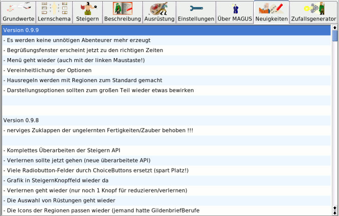

Bedienung - News
|
Notebookseite Neuigkeiten

|
Allgemein
Auf dieser Seite finden sich Neuigkeiten zur aktuellen MAGuS-Version. Insbesondere finden sich
hier noch Hinweise auf bekannte, aber noch nicht behobene Fehler, sowie geplante Änderungen
an MAGuS
|
| Zum Seitenanfang |
|